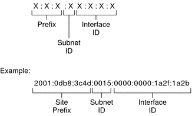
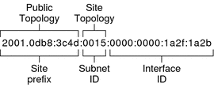
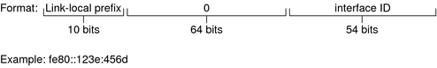

|
|||
|
1. Solaris TCPIP Protocol Suite (Overview) 2. Planning an IPv4 Addressing Scheme (Tasks 3. Planning an IPv6 Addressing Scheme (Overview) IPv6 Neighbor Discovery Protocol Overview IPv6 Address Autoconfiguration 4. Planning an IPv6 Network (Tasks) 5. Configuring TCP/IP Network Services and IPv4 Addressing (Tasks) 6. Administering Network Interfaces (Tasks) 7. Enabling IPv6 on a Network (Tasks) 8. Administering a TCP/IP Network (Tasks) 9. Troubleshooting Network Problems (Tasks) 10. TCP/IP and IPv4 in Depth (Reference) 12. About Solaris DHCP (Overview) 13. Planning for DHCP Service (Tasks) 14. Configuring the DHCP Service (Tasks) 15. Administering DHCP (Tasks) 16. Configuring and Administering DHCP Clients 17. Troubleshooting DHCP (Reference) 18. DHCP Commands and Files (Reference) 19. IP Security Architecture (Overview) 21. IP Security Architecture (Reference) 22. Internet Key Exchange (Overview) 24. Internet Key Exchange (Reference) 25. Solaris IP Filter (Overview) 28. Administering Mobile IP (Tasks) 29. Mobile IP Files and Commands (Reference) 30. Introducing IPMP (Overview) 31. Administering IPMP (Tasks) Part VI IP Quality of Service (IPQoS) 32. Introducing IPQoS (Overview) 33. Planning for an IPQoS-Enabled Network (Tasks) 34. Creating the IPQoS Configuration File (Tasks) 35. Starting and Maintaining IPQoS (Tasks) 36. Using Flow Accounting and Statistics Gathering (Tasks) |
IPv6 Addressing OverviewIPv6 addresses are assigned to interfaces, rather than to nodes, in recognition that a node can have more than one interface. Moreover, you can assign more than one IPv6 address to an interface. Note - For complete technical information about the IPv6 address format, go to RFC 2374, IPv6 Global Unicast Address Format IPv6 defines three address types:
Parts of the IPv6 AddressAn IPv6 address is 128 bits in length and consists of eight, 16-bit fields, with each field bounded by a colon. Each field must contain a hexadecimal number, in contrast to the dotted-decimal notation of IPv4 addresses. In the next figure, the x's represent hexadecimal numbers. Figure 3-2 Basic IPv6 Address FormatThe leftmost three fields (48 bits) contain the site prefix. The prefix describes the public topology that is usually allocated to your site by an ISP or Regional Internet Registry (RIR). The next field is the 16-bit subnet ID, which you (or another administrator) allocate for your site. The subnet ID describes the private topology, also known as the site topology, because it is internal to your site. The rightmost four fields (64 bits) contain the interface ID, also referred to as a token. The interface ID is either automatically configured from the interface's MAC address or manually configured in EUI-64 format. Consider again the address in Figure 3-2: 2001:0db8:3c4d:0015:0000:0000:1a2f:1a2b This example shows all 128 bits of an IPv6 address. The first 48 bits, 2001:0db8:3c4d, contain the site prefix, representing the public topology. The next 16 bits, 0015, contain the subnet ID, representing the private topology for the site. The lower order, rightmost 64 bits, 0000:0000:1a2f:1a2b, contain the interface ID. Abbreviating IPv6 AddressesMost IPv6 addresses do not occupy all of their possible 128 bits. This condition results in fields that are padded with zeros or contain only zeros. The IPv6 addressing architecture allows you use the two-colon (::) notation to represent contiguous 16-bit fields of zeros. For example, you might abbreviate the IPv6 address in Figure 3-2 by replacing the two contiguous fields of zeros in the interface ID with two colons. The resulting address is 2001:0db8:3c4d:0015::1a2f:1a2b. Other fields of zeros can be represented as a single 0. You can also omit any leading zeros in a field, such as changing 0db8 to db8. So the address 2001:0db8:3c4d:0015:0000:0000:1a2f:1a2b can be abbreviated as 2001:db8:3c4d:15::1a2f:1a2b. You can use the two colon notation to replace any contiguous fields of all zeros in the IPv6 address. For example, the IPv6 address 2001:0db8:3c4d:0015:0000:d234::3eee:0000 can be collapsed into 2001:db8:3c4d:15:0:d234:3eee::. Prefixes in IPv6The leftmost fields of the IPv6 address contain the prefix, which is used for routing IPv6 packets. IPv6 prefixes have the following format: prefix/length in bits Prefix length is stated in classless inter-domain routing (CIDR) notation. CIDR notation is a slash at the end of the address that is followed by the prefix length in bits. For information on CIDR format IP addresses, refer to Designing Your CIDR IPv4 Addressing Scheme. The site prefix of an IPv6 address occupies up to 48 of the leftmost bits of the IPv6 address. For example, the site prefix of the IPv6 address 2001:db8:3c4d:0015:0000:0000:1a2f:1a2b/48 is contained in the leftmost 48 bits, 2001:db8:3c4d. You use the following representation, with zeros compressed, to represent this prefix: 2001:db8:3c4d::/48 Note - The prefix 2001:db8::/32 is a special IPv6 prefix that is used specifically for documentation examples. You can also specify a subnet prefix, which defines the internal topology of the network to a router. The example IPv6 address has the following subnet prefix. 2001:db8:3c4d:15::/64 The subnet prefix always contains 64 bits. These bits include 48 bits for the site prefix, in addition to 16 bits for the subnet ID. The following prefixes have been reserved for special use:
Unicast AddressesIPv6 includes two different unicast address assignments:
The type of unicast address is determined by the leftmost (high order) contiguous bits in the address, which contain the prefix. The unicast address format is organized in the following hierarchy:
Global Unicast AddressThe global unicast address is globally unique in the Internet. The example IPv6 address that is shown in Prefixes in IPv6 is a global unicast address. The next figure shows the scope of the global unicast address, as compared to the parts of the IPv6 address. Figure 3-3 Parts of the Global Unicast AddressPublic TopologyThe site prefix defines the public topology of your network to a router. You obtain the site prefix for your enterprise from an ISP or Regional Internet Registry (RIR). Site Topology and IPv6 SubnetsIN IPv6, the subnet ID defines an administrative subnet of the network and is up to 16 bits in length. You assign a subnet ID as part of IPv6 network configuration. The subnet prefix defines the site topology to a router by specifying the specific link to which the subnet has been assigned. IPv6 subnets are conceptually the same as IPv4 subnets, in that each subnet is usually associated with a single hardware link. However, IPv6 subnet IDs are expressed in hexadecimal notation, rather than in dotted decimal notation. Interface IDThe interface ID identifies an interface of a particular node. An interface ID must be unique within the subnet. IPv6 hosts can use the Neighbor Discovery protocol to automatically generate their own interface IDs. Neighbor Discovery automatically generates the interface ID, based on the MAC or EUI-64 address of the host's interface. You can also manually assign interface IDs, which is recommended for IPv6 routers and IPv6-enabled servers. For instructions on how to create a manual EUI-64 address, refer to RFC 3513 Internet Protocol Version 6 (IPv6) Addressing Architecture. Transitional Global Unicast AddressesFor transition purposes, the IPv6 protocol includes the ability to embed an IPv4 address within an IPv6 address. This type of IPv4 address facilitates the tunneling of IPv6 packets over existing IPv4 networks. One example of a transitional global unicast address is the 6to4 address. For more information on 6to4 addressing, refer to 6to4 Automatic Tunnels. Link-Local Unicast AddressThe link-local unicast address can be used only on the local network link. Link-local addresses are not valid nor recognized outside the enterprise. The following example shows the format of the link-local address. Example 3-1 Parts of the Link-Local Unicast AddressA link-local prefix has the following format: fe80::interface-ID/10 The following is an example of a link-local address: fe80::23a1:b152
When you enable IPv6 during Solaris installation, the lowest numbered interface on the local machine is configured with a link-local address. Each interface requires at least one link-local address to identify the node to other nodes on the local link. Therefore, you need to manually configure link-local addresses for additional interfaces of a node. After configuration, the node uses its link-local addresses for automatic address configuration and neighbor discovery. Multicast AddressesIPv6 supports the use of multicast addresses. The multicast address identifies a multicast group, which is a group of interfaces, usually on different nodes. An interface can belong to any number of multicast groups. If the first 16 bits of an IPv6 address is ff00n, the address is a multicast address. Multicast addresses are used for sending information or services to all interfaces that are defined as members of the multicast group. For example, one use of multicast addresses is to communicate with all IPv6 nodes on the local link. When an interface's IPv6 unicast address is created, the kernel automatically makes the interface a member of certain multicast groups. For example, the kernel makes each node a member of the Solicited Node multicast group, which is used by the Neighbor Discovery protocol to detect reachability. The kernel also automatically makes a node a member of the All-Nodes or All Routers multicast groups. For detailed information about multicast addresses, refer to IPv6 Multicast Addresses in Depth. For technical information, see RFC 3306, Unicast-Prefix-based IPv6 Multicast Addresses, which explains the multicast address format. For more information about the proper use of multicast addresses and groups, RFC 3307, Allocation Guidelines for IPv6 Multicast Addresses. Anycast Addresses and GroupsIPv6 anycast addresses identify a group of interfaces on different IPv6 nodes. Each group of interfaces is known as an anycast group. When a packet is sent to the anycast address, the anycast group member that is physically closest to the sender receives the packet. Note - The Solaris Operating System (Solaris OS) implementation of IPv6 does not support the creation of anycast addresses and groups. However, Solaris IPv6 nodes can send packets to anycast addresses. For more information, see Considerations for Tunnels to a 6to4 Relay Router. |
||
|